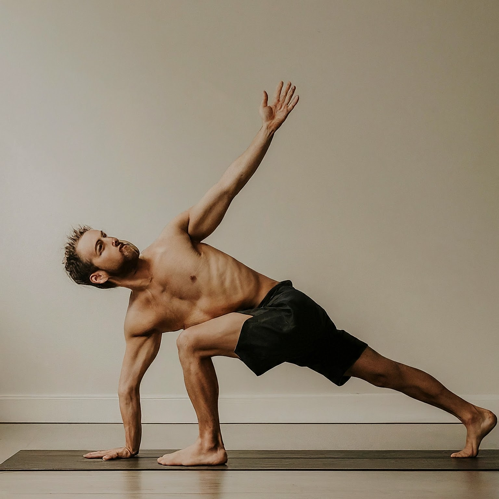

Understanding Insomnia from a Yogic Perspective
Insomnia, in the yogic tradition, is seen as a disturbance in the balance of the mind and body, resulting in difficulty falling asleep or staying asleep. It is believed that disruptions in the flow of prana (life force energy) and excessive mental activity contribute to insomnia.
Understanding Insomnia in Yogic Terms
In yoga philosophy, sleep is considered essential for physical, mental, and emotional well-being. Insomnia can occur due to imbalances in the doshas (bio-energies), unresolved stress, or disturbed mental patterns that prevent relaxation and restorative sleep.
Yogic Approaches to Managing Insomnia
Yoga offers effective methods for managing insomnia by calming the mind, relaxing the body, and promoting deep rest. Here are some yogic practices that can help:
-
Yoga Nidra: Yoga Nidra, also known as yogic sleep, is a guided meditation practice that induces deep relaxation, releases tension, and promotes restful sleep.
.jpg)
-
Pranayama (Breath Control): Pranayama techniques, such as Nadi Shodhana (Alternate Nostril Breathing) and Sitali Pranayama (Cooling Breath), calm the nervous system, reduce stress, and prepare the body for sleep.

-
Gentle Asana Practice: Gentle yoga poses, such as Balasana (Child's Pose) and Supta Baddha Konasana (Reclining Bound Angle Pose), release tension from the body, ease muscle stiffness, and facilitate relaxation before bedtime.

-
Mindfulness and Meditation: Mindfulness meditation techniques, such as breath awareness and body scan, cultivate present-moment awareness, soothe racing thoughts, and promote a sense of calm conducive to sleep.